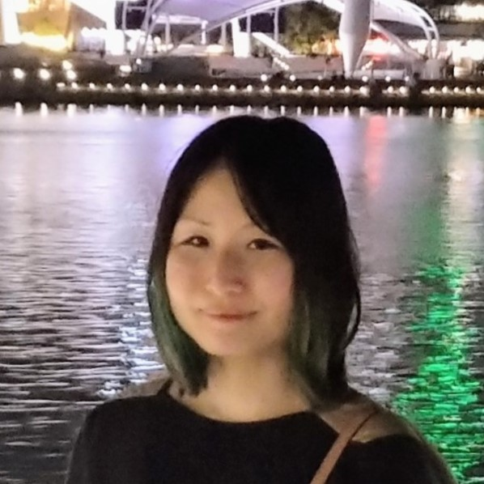
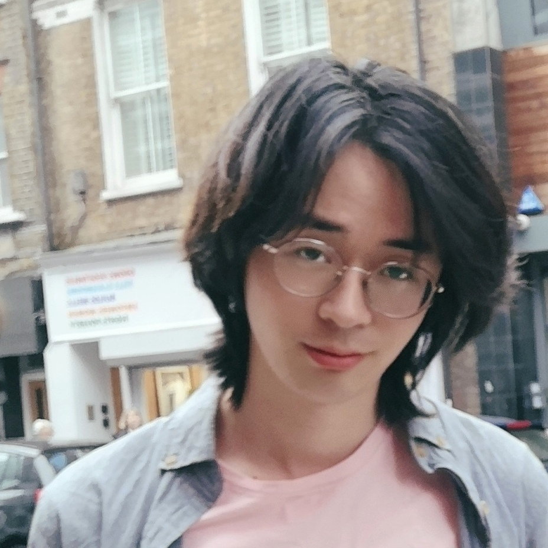
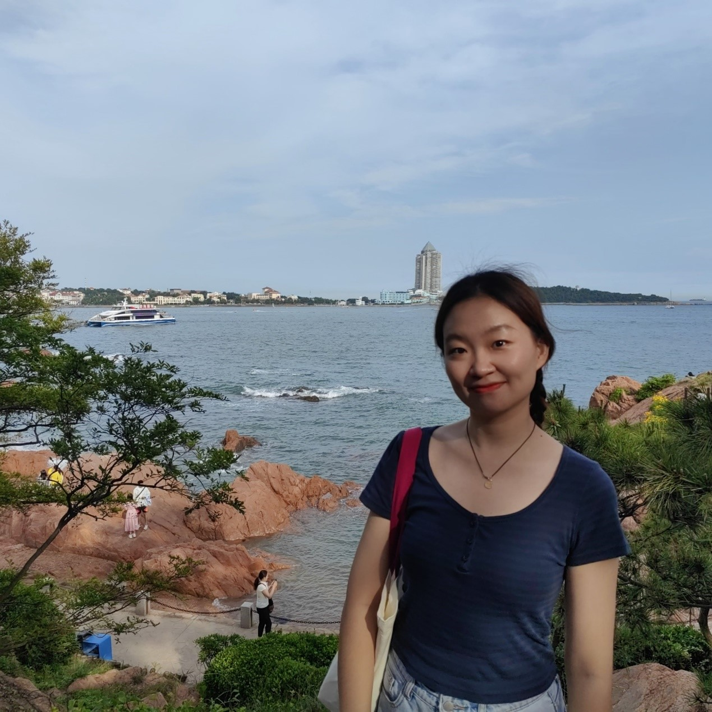
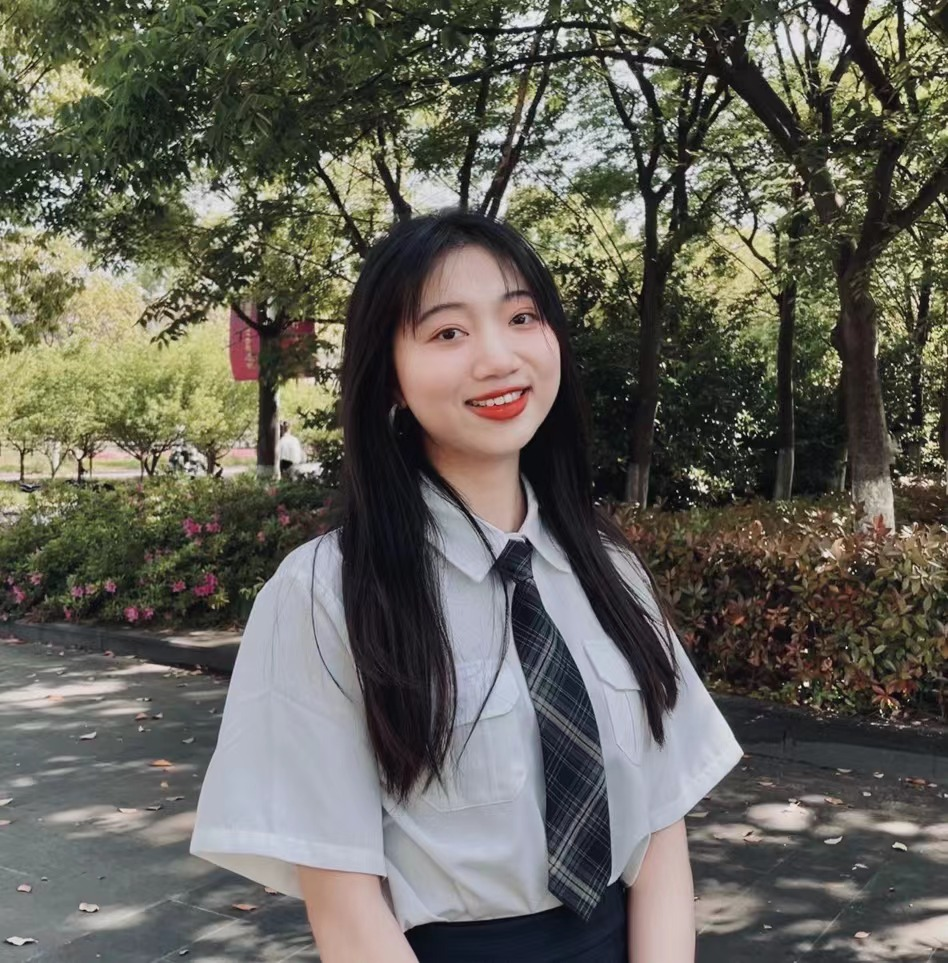
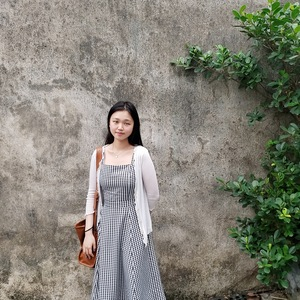
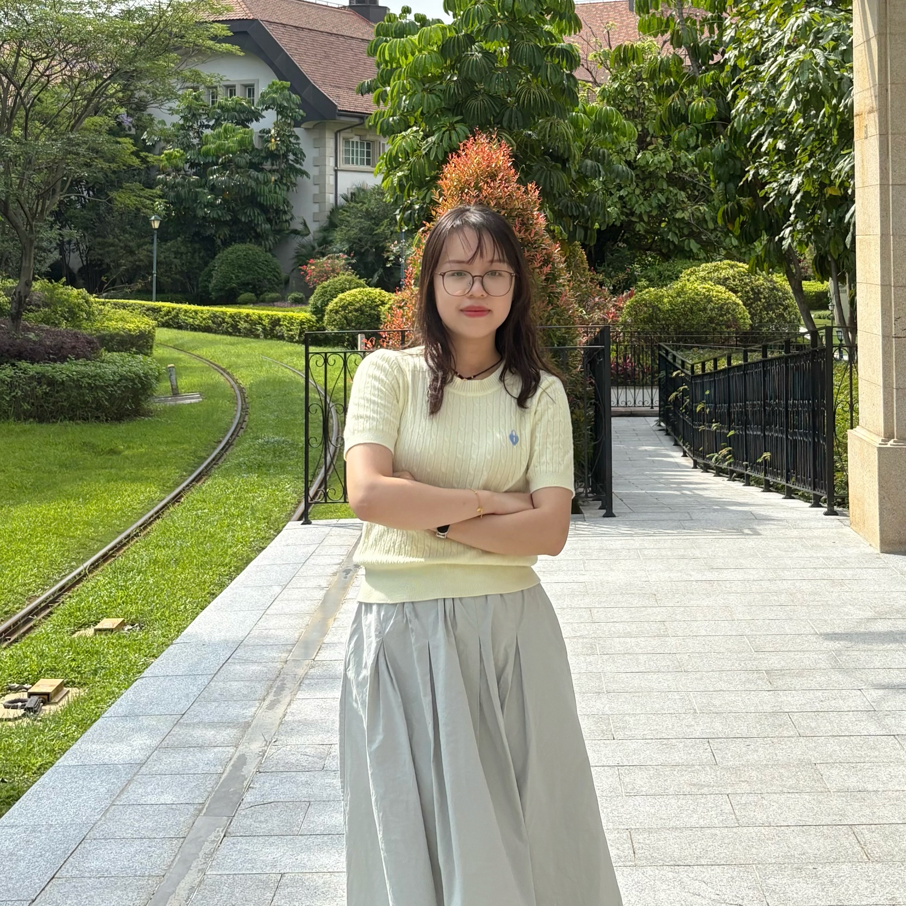
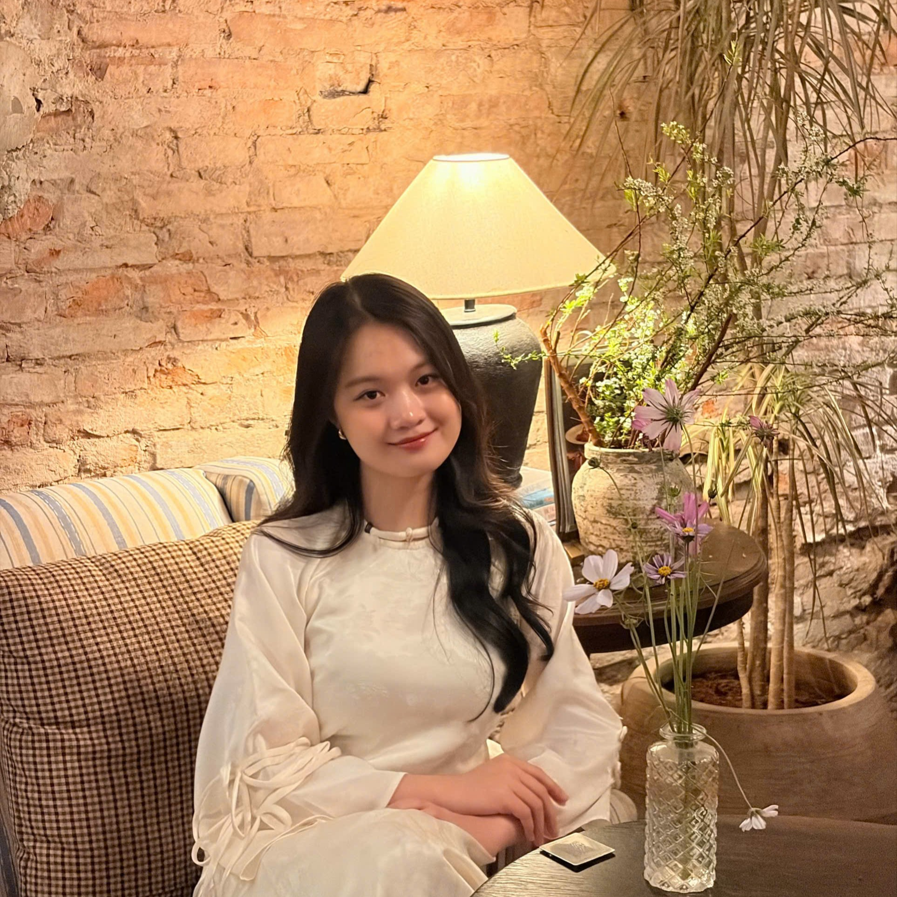
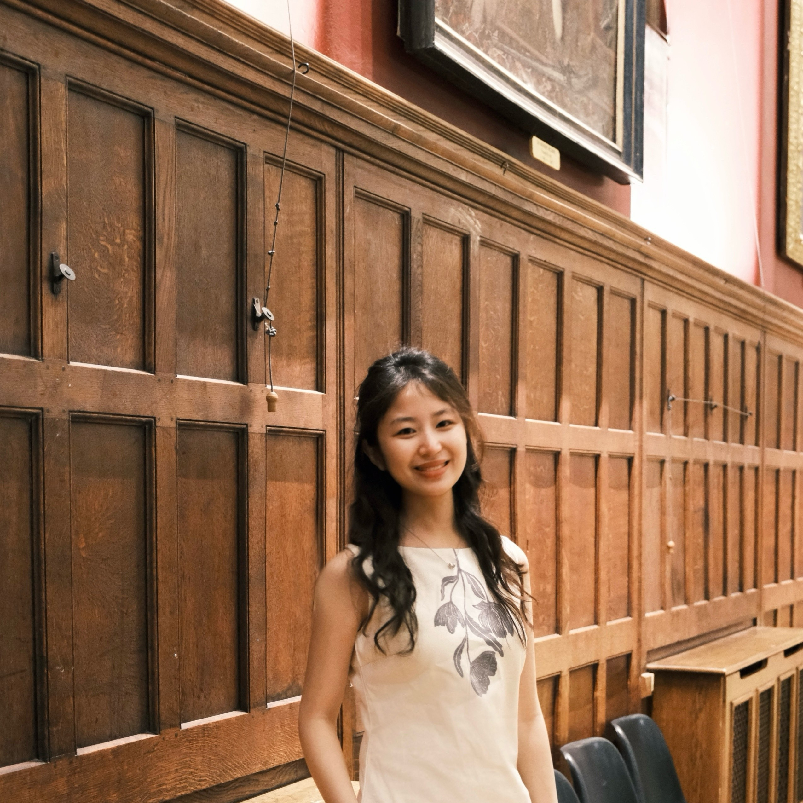
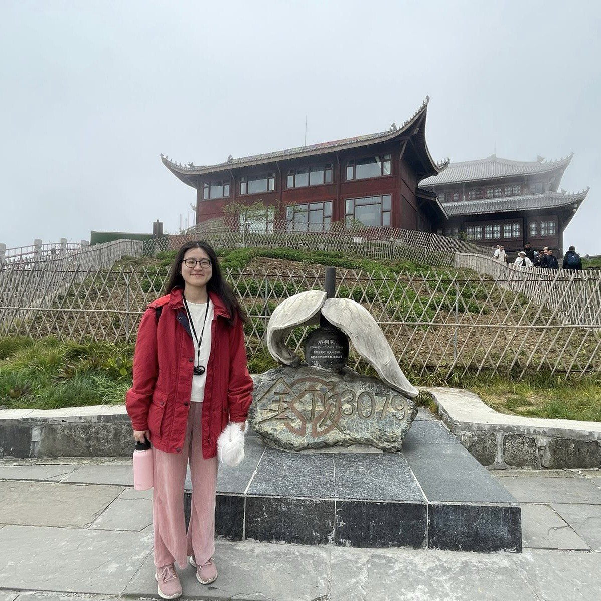

Aine Ito
伊藤愛音
Bilingualism and Language Processing Lab
We have a poster introducing eye-tracking (created by Daiwen & Danning) here (best viewed on a mobile device).
Lab meeting: We hold weekly lab meetings in the Graduate Reading Room (AS5-05-09) during the semester. If you are interested in attending, please subscribe to the Psycholinguistics Group mailing list here to receive announcements about upcoming meetings.
Research participation: If you are interested in taking part in on-going studies at NUS, you can sign up via our Language Science at NUS website.
Research talks: If you are interested in psycholinguistic talks/workshops, please visit the Virtual Psycholinguistics Forum.
Lab members
PI
|
 |
Aine Ito
My research investigates what makes it difficult to comprehend a non-native language efficiently and explores ways to facilitate non-native language processing with a focus on predictive processing. I am also interested in how orthographic information influences listening comprehension. I mainly use eye-tracking (visual world paradigm), EEG and reaction time measures in my experiments. |
PhD students
|
 |
Mingyuan Yang
Hi, I’m currently a PhD student in Aine Ito’s lab. My research interests focus on the language process of bilinguals, in particular the interaction of L1 and L2, and varied linguistic representations of different language groups. You could contact me by email: e1148822@u.nus.edu |
|
 |
Danning Sun
I am currently a Ph.D. student in English Language and Linguistics at NUS and a member of Dr. Aine Ito’s lab. My research interests center around implicit (language) learning, specifically investigating the occurrence of (linguistics) adaptation through prediction error when faced with unexpected predictions. I aim to examine how L2 English learners, with diverse L1 backgrounds, predict and revise their predictions during non-native sentence processing. Utilizing eye-tracking measurement, I hope to make a valuable contribution to SLA and gain new insights into the question of whether prediction is an essential mechanism in (language) learning or not. |
|
 |
Daiwen Gong
I am currently a doctoral student at NUS, working with Professor Aine Ito. My research interests lie in facilitating the real-time processing of the non-native language and discovering its intricate relationship with the native language. Additionally, by utilizing behavioral measures like eye-tracking, I am keen on exploring what can be revealed by the language we speak, especially the errors we make and the difficulties we encounter. Pronouns: she/her, Email: e1148827@u.nus.edu |
|
 |
Hao Zeng
I am currently a student in the ELL PhD program, working with Aine Ito in the Bilingualism and Language Processing Lab. My research focuses on prediction and cross-linguistic activation in language comprehension via online and offline measures, such as reaction time and eye-tracking. Besides, I find the gap in psychological processes of language comprehension between L1 and L2 speakers meaningful, as it implies how to facilitate L2 language processing. |
|
 |
Ying Qu
I am a visiting Ph.D. student working with Aine Ito in the Bilingualism and Language Processing Lab. My research interests mainly focus on sentence processing, specifically investigating the mental representation of Chinese construction among native speakers and L2 learners. I aim to examine the sentence structure of Chinese VNN (verb-noun-noun) construction and how language proficiency influence such sentence processing. Using structural priming paradigm, I hope to provide more empirical evidence for Chinese special construction and explore the indivisual differences during Chinese sentence processing. |
|
 |
Mai Lan Nguyen
I am a PhD student in the Department of English, Linguistics, and Theatre Studies at the National University of Singapore, working with Dr. Aine Ito in the Bilingualism and Language Processing Lab. My research interests lie at the intersection of psycholinguistics, bilingualism, and language education. I am interested in how bilingual language processing is shaped by diverse linguistic and bilingual experiences, drawing on experimental methods such as eye-tracking and reaction time measures to investigate these differences. In the long term, I hope to better understand bilingual language processing across diverse linguistic communities and explore how these insights can inform more inclusive language education. |
|
 |
Yiwei Guo
I’m currently a PhD student in English Language and Linguistics at NUS, supervised by Professor Aine Ito. My research interests mainly focus on language prediction and processing, particularly in bilingual contexts. I am interested in how bilingual speakers anticipate and process upcoming linguistic information at the lexical and sentence levels, exploring the cognitive and neural mechanisms underlying real-time language comprehension. |
MA student
|
 |
Shun Yu Yeo
I am an MA research student at the Department of Linguistics under the supervision of Dr. Aine Ito in the Bilingualism and Language Processing Lab. My current research investigates predictive processing in bilingual teenagers’ non-dominant language and how increased L2 proficiency influences real-time sentence comprehension. I aim to explore how bilingual learners process language and how such insights can inform pedagogical practices to support second language learners’ reading fluency and comprehension. |
Former members